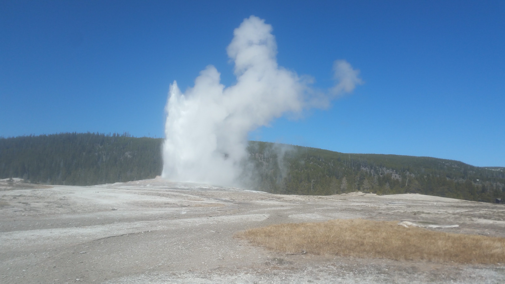
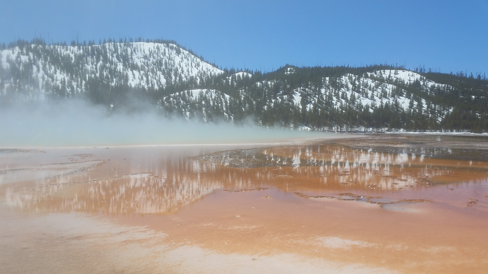
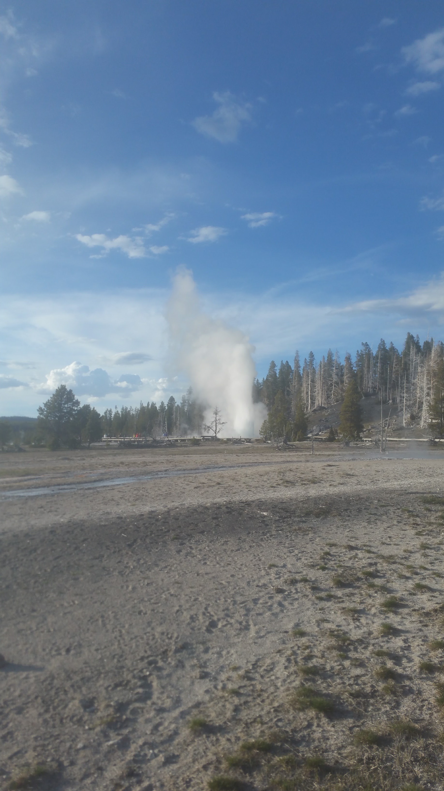
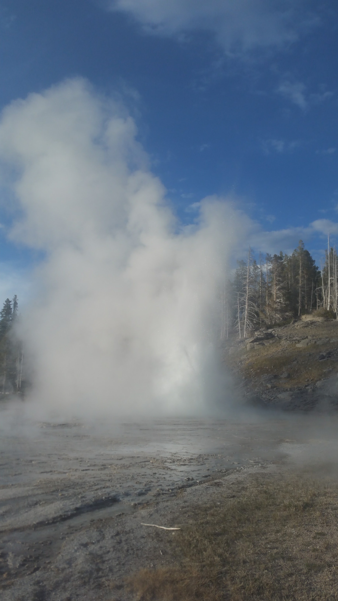
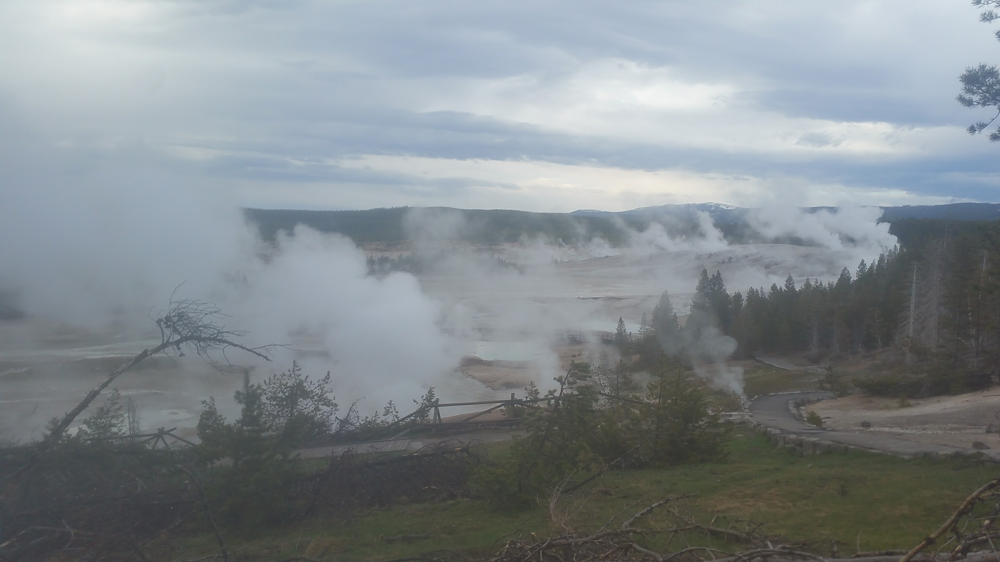
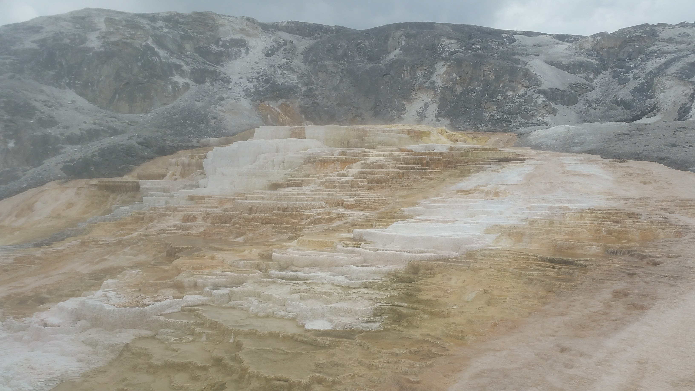
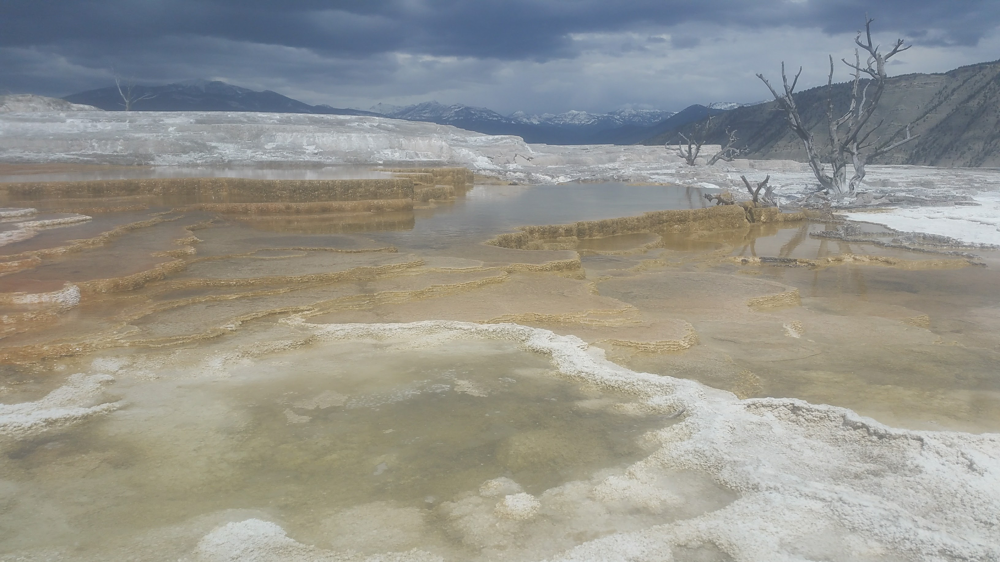
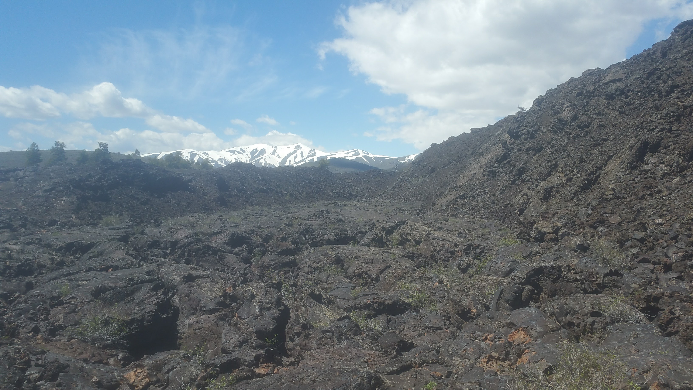

Hello hello hello! We are here in grey-but-beautiful Oregon, taking some much-needed 4-walls time back with some very awesome friends. While we've both been keeping eyes on the insane political situation, it's looking to be a very relaxing time. I expect I'll also be updating my hot springs list in the coming days.
After touring the eastern reaches of the beautiful nation of Canada, we returned to the US through Alberta. Crossing at a tiny border station in Montana, we were quickly greeted by the sometimes-rare, sometimes-everywhere American icon, buffalo! Driving through the cloudy day, we found ourselves in the mountains of northern Montana in the evening, spending the night in the parking lot of a campground buried in snow. Our destination? Glacier National Park.
Unfortunately, the park was still largely buried in massive snowdrifts--like so many parts of the Rockies at this and most times of year--so we had to settle for some lighter hiking... that still lead us for miles across ice and slush. Sadly, the thick snow denied us any birds-eye view of the park's namesake glaciers, but they were a pretty common sight nonetheless.

Fish Lake
From Glacier we headed south to Missoula, for our first real showers since we had entered Canada nearly a month prior. We had dipped in a few rivers and hot springs, but I can assure you (and probably don't need to) that this is a completely different thing. After that, it was time to head for Yellowstone.
The US (and the world)'s first National Park, Yellowstone is a place both wholly American and completely unlike this Earth. Miles of brilliantly-colored thermal areas spewing steam, gas, and strange odors; jagged purple peaks over expansive valleys of grass and brush; and a tourism industry cooperating perfectly with some of the most adventurous backcountry adventurers in the nation, are just a few features of this massive, wild, and wonderful place. Our first day in the park was dedicated to the sites and sights we had heard about so much:
Old Faithful,


The Grand Prismatic Pool,

and buffalo!!
We walked the large Upper Geyser Basin, seeing a variety of predictable and unpredictable geysers erupting in all sorts of manners, heights, and sounds. We spent the first (and second) evening camping on the western edge of the park.
The second day we had an amazing hot breakfast at the Running Bear Cafe, in West Yellowstone. It had been weeks since our last hot breakfast, and we were pretty pleased with ourselves after. The rest of the day was dedicated to the remaining thermal areas in the southern ends of the park: Lower Geyser Basin, Biscuit Basin, and Black Sand Basin.
 Both of these photos are of the world's largest *predictable* geyser, Grand Geyser. We were lucky to see this one erupt, as it only happens every 9 hours... plus or minus 3 hours. But it erupts in blasts over 300ft tall!
That evening we were hassled by some Park Rangers that thought we had weed in the car. It ended up just being a waste of time for everyone.
The next day we went to the Grizzly and Wolf Discovery Center in West Yellowstone! The GWDC is basically a shelter for overly-socialized grizzly bears and wolves from around North America. They come to the shelter, rather than being put down as is done to so many overly-socialized wildlife, to educate people about their behaviours and futures. We spent hours at the center watching bears and wolves, as well as saying hi to the number of riparian species that were protected there. The bears of the center are actually used to test out bear-proof containers, and we got to witness some containers be tested by a number of adorable grizzlies.
From there we headed back into the park. We went to Gibbon Falls, Monument Geyser Basin, and Norris Geyser Basin. These thermal areas were far different (because they were far hotter) than the brilliantly-colored southern basins, giving them an even more alien look.
Where Demons Roam

At the end of the afternoon, we were even fortunate enough to see a momma grizzly and her cub! The pair were digging for roots in a field, but were far enough off for safety... sadly, that also means my crappy cell phone camera couldn't get a good shot!
That evening we slept in the north end of the park, letting us come back to Mammoth Hot Springs more easily in the morning.
 The springs here have formed impressive terraces all over a mountainside
After Mammoth it was eastward through the northern Lamar Valley, where we had heard we would see plenty of wildlife--and we were not disappointed. Coyotes, buffalo, pronghorn antelope, elk, and another grizzly pair! It was an eventful drive that resulting in us doubling back... the town on the east of the park was in a very sleepy off-season. The next morning we traveled through the park to its center, even catching a wolf devouring an elk carcass off the main roadway! After that we saw the Lower Falls of the Yellowstone River, inside the Grand Canyon of the Yellowstone (kind of a silly name IMO), but the Upper Falls were inaccessible due to snowfall.
That evening, we drove to Craters of the Moon National Monument, in Idaho.
An appropriately named place
The entire landscape here is a bizarre collection of rhyolite and basalt formations, some of which have begun to host plant life once again. It's a weird, eerie, but interesting place. We also found that after Yellowstone, we were very refreshed by the positivity of the Monument's staff. It only took an afternoon to explore the entirety of the Monument, due to the caves being closed at the time, but was a great stop.
We spent the evening in Boise, which was surprisingly cool (even despite being told it was cool). Our campsite for the evening was a Bureau of Land Management spot overlooking the entire city, which was lovely in the night. Best part? It was 10 minutes from downtown.
The next morning we decided to start driving westward, to chip away at our 9-hour drive to Eagle Point, Oregon. But we had one of those days where we just kept chugging (there also weren't too many places to stop in eastern Oregon) and found ourselves in Bend, right before leaving the "Dry Side" of the state. We then heard that our friends were having a Full Moon ceremony to celebrate the Scorpio Moon, and just finished off the last of that drive right there. So now we're here! We're falling in love with this place all over again, and very excited to spend time with friends--new and old.
Thanks for reading, hope to have more soon
Mileage: 20800
Weather: Grey, warm, 70F
Currently listening to: ODESZA